Technical information
- Overall network architecture
- How it works
- Using HTML5
- Configuring the server
- Server authentication protocol
- Using TLS/HTTPS
- True Random Number Generator (TRNG)
- Testing the TRNG random output
- TRNG tests and analysis
- Custom random data loading
- Pad storage and exporting data
- REST API using JSON
- Message encoding
- Encryption process
- Decryption process
- Message authentication code (MAC)
- Auto nuke process
Overall network architecture
The following will outline the entire design of the application and how it works. Exact implementation details can be found in the source code which is provided with every download.

How it works
- The first user will run a True Random Number Generator included with the software. This is explained further on. This random data is then broken up into separate one-time pads. It is possible to generate enough data for 1900+ messages in under a minutes.
- Each user will be assigned pads for sending messages. This prevents re-use of a pad by another user. Re-using a pad can make cryptanalysis possible so it's very important to prevent this. The messaging protocol is explained in depth further on.
- Once the pads are generated, the program can export the pads for each user to text files. These should be saved onto removable flash media such as MicroSD, SD card, USB thumbdrive, CD, DVD or portable hard drive. There are some other precautions listed in the FAQ such as creating a TrueCrypt volume on the storage media first before copying the pads into it. This saves time in not needing to securely erase the pads or physically destroy the storage media after they have been transferred to the other user.
-
To get the one-time pads to the other users, ideally they will arrange a physical meetup.
This is to create a secure channel or
air gap to deliver the one-time
pads which ensures the encryption keys are not intercepted or compromised by transferring them over an
insecure network like the internet. Key exchange is considered out of scope for the program itself as
this is the user's responsibility. The best method is to hide in plain sight. Here are a few solutions
that will usually work:
- Meeting the users in person for a coffee/drink/lunch/dinner provides an innocent cover for the exchange of encryption keys. If you are going about your daily activities this is the least suspicious option and the most likely to succeed.
- A dead drop. Arrange the time and place of the dead drop (or regularly scheduled dead drops) in person or using another method, but do not arrange this over an insecure channel like the phone or internet.
- If your country does not inspect internal mail you can hand sign a sealed courier envelope and send it with reasonable assurance that it won't be compromised. If the package appears to be opened on delivery, consider the encryption keys compromised and do not use them. International mail is sometimes opened by Customs so it is not a reliable method. It would not be difficult to hide an encrypted MicroSD within something else though.
- It is not difficult to get a laptop, portable hard drive, MicroSD card, or SD card through Customs at national or international airports. You can also hide them in your luggage or on your person. If your government generally clones or scans personal phones or computers as you are going through Customs you may need to use steganography to hide the one-time pads within your vacation photos, videos or other files.
- Governments and diplomats also have the option of using a diplomatic bag to transfer items to another country which have diplomatic immunity from search or seizure under the Vienna Convention on Diplomatic Relations.
There may be people that complain about having to deliver the one-time pads physically. If you seriously want to take your privacy back, you need to use encryption which the NSA absolutely and unequivocally can't break. If you are willing to trade security for convenience and blindly use the US government's recommended encryption algorithms then you will only receive the amount of privacy they want you to have. The US government does not have your best interests at heart, they want to monitor any and all communications and they will do that by whatever means necessary. - As the one-time pads are in transit it is important to keep them securely on you at all times. Do not leave them anywhere unattended and keep them in a zipped up pocket to prevent pickpockets, and ideally have a tamper evident seal.
- Once the one-time pads are safely delivered and the server is set up, each user will load them into the program and begin chatting. There are extra security considerations in the FAQ but it will be important to erase the text file containing the one-time pads from the removable media once they are loaded into the program. Storing the one-time pads and running the software from within an encrypted container on the removable media will help mitigate most issues. Portable versions of TrueCrypt and Firefox can be used for this.
Using HTML5
Matasano Security raises some points about JavaScript cryptography and how JavaScript being delivered by the web server is insecure. There are definite sensible and secure solutions to the problems they raised. Also if you read the FAQ, all of their other concerns have been mitigated one by one.
Most points they made are not applicable for this software due to the fact that the source code is
downloaded as a tar.gz archive
file and users are expected to verify the file's GPG signature with the one from this website to
ensure its authenticity. From there the code can be run locally from the machine by going to
the directory and running index.html which will load the website and code into the browser. This means all
code is always running locally from the local hard drive and the web address will be similar to
file:///media/truecrypt1/jericho/client/index.html. All the executable code is self
contained and does not rely on any server delivered JavaScript at all. This itself mitigates
the majority of the problems the Matasano Security article raised.
HTML5 has more advantages than disadvantages. It's easier and faster to develop with. New APIs allow for cryptography, persistent database storage, messaging and file management. Browsers are first in line for security updates and the best ones are open source and trustworthy. People rely on browsers to have good security to do their internet banking and shopping online. The source code does not need to be compiled. You can verify the source code being run live in the browser using Chromium or Firefox built-in Web Development tools or with addons like Firebug. This allows you to verify the code is doing exactly what it should be. HTML5 is cross platform, one code base can literally run on Windows, Linux, Mac, phones and tablets simply with the latest web browser. One of the goals of the project is to get a truly secure chat program functioning on an open hardware platform and an open operating system like Firefox OS. This is a true open source OS for smartphones and tablets from a reputable organisation that believes that individual's security and privacy on the internet is fundamental.
Currently this software has been tested to work in Firefox, Chromium and Google Chrome. Some of the other browsers have not implemented the Web Crypto API yet. From version 1.4 onwards, the layout will be responsive and will work on desktops, tablets and mobiles. Some more work and testing is still required to get it working nicely on mobile. In particular a method to load the one-time pads into the program using later versions of Android. Using Firefox is recommended as they are open source and are not involved in the spy scandal with PRISM. Unfortunately nobody can say for sure about that with Google. Chromium may be another alternative but the proprietary Google Chrome is not recommended.
It is recommended to run the browser profile from inside a TrueCrypt volume to protect the one-time pads when they are stored inside the browser storage. Future versions of the software will encrypt the one-time pads within the program before storing locally.
The program is built using sound, provably strong cryptography. The design and implementation to bring the solution together uses secure cryptographic primitives (Skein and Keccak) for authentication which were designed by publically reputable and trustworthy cryptographers. We have avoided using algorithms from the NIST who have been shown to be heavily influenced by the NSA. The NSA have been secretly weakening and promoting weak or broken public encryption standards.
The main crypto library this program uses is CryptoJS. There were some other libraries that would be good to use but they either did not work in a HTML5 Web Worker which makes the hashing process take significantly longer and blocks the user interface, or their outputs couldn't be verified from the reference test vectors. Some more SHA-3 finalists would be nice to include from the recent competition however there is a lack of hash algorithms implemented in JavaScript. It is important to verify that the code can produce the same hash outputs as the test vectors from the specification documents. This ensures the program is not using a faulty or backdoored version of the algorithm that gives incorrect results.
Configuring the server
The server basically functions as a temporary store for the encrypted messages. One user leaves encrypted messages on the server and the other users can retrieve them when they are able. If both users are connected at the same time it is possible for realtime chat, plus or minus a few seconds. The messages are removed immediately from the server after they are read by all users.
The server is user owned and operated which means users are in complete control of the communications. No-one else knows about the server so this keeps it off the radar of the intelligence agencies, as opposed to having a central server somewhere that everyone on the internet is using. If everyone was using a single server it leaves it as a single point of failure and the intelligence agencies can raid it, hack it or shut it down with a court order. There is no useful data for them on the server but they would be able to shut down a lot user's of communications at once, at least until someone set up a new server.
The server code provides a REST API using JSON which will run on the Apache 2.2+ web server, MySQL 5.5+ database and PHP 5.3+ programming language. PHP was chosen because it is a memory safe language, fast to develop in and fast to deploy along with a basic LAMP stack. In a future version, the design may be ported to another server side language, database and web server that are considered more secure. The straightforward JSON REST API interface should enable the client to connect with multiple different backend code bases and users can implement the one of their choosing.
At the moment, to get the server side running all that is needed is to install a basic LAMP stack, copy the server files over to the web root directory, run the database script to create the tables, then finally edit the config file with the server's database and API login credentials. An easy to use guide with screenshots for Ubuntu server has been created for this. Users can install a server their own network, or pay for a cheap VPS somewhere. It is not recommended to use a VPS in the US to rule out the possibility of the provider being issued with a National Security Letter which would compromise security of the server.
Server authentication protocol
A new protocol from version 1.3 was designed to securely authenticate the requests and responses with the server API. This replaces TLS which secured the server API credentials (username & password) in transit from version 1.2. The reason for this was mainly to simplify installation, avoid Certificate Authorities, have resistance against active MITM attacks and NSA's quantum computers. There have also been major security problems with common TLS implementations such as OpenSSL, GnuTLS and iOS which have led to a loss in confidence in these programs which have poor code quality and may be hiding other NSA backdoors.
Design goals
- Authenticate all API requests to the server to verify they are from valid server users.
- Authenticate all API responses from the server to verify the response came from the legitimate server, not an attacker.
- Mitigate passive MITM attacks where an attacker tries to steal the API credentials in transit.
- Mitigate active MITM attacks where an attacker attempts to send fake responses to/from the server or impersonate the server.
- Mitigate replay attacks and reject a request/response if the data was modified in transit.
- Prevent one request to the server being modified by an attacker to perform a different API action.
- Mitigate quantum computer attacks on the protocol.
Limitations and assumptions
- The server administrator will control the server and be a user of the chat group's operating on that server as well. The server administrator will be a trustworthy person not interested in interfering with his own chat group's communications. If a group of users want to communicate with each other, but the server administrator is not included in that group, then they should set up their own server. This rules out the server administrator having the will or capability to interfere with communications.
- Users of the server have an interest in keeping the shared API key on the server a secret to protect their own communications so they will not give that key to anyone else.
- There is no need for each user having a separate API key on the server to send/receive requests because the server administrator could access that key anyway and impersonate them or simply edit the database record to alter which user the message came from.
- There is trust between the users in the group communicating not to impersonate other users in the chat group. Because every user in a group has access to all the same one-time pads and same API key, it would technically be possible to pretend to be one of the other users in the chat group. This also doubles as a deniable authentication protocol because every message sent could have been engineered to come from one of the other users in the chat group.
- Encryption for the server protocol is not required because individual messages are encrypted using the one-time pads and signed on each client machine. Some anonymised, non-critical meta-data is viewable if an attacker in a privileged network position is passively watching the traffic. This may indicate a chat conversation is taking place using this protocol. If this is a problem, the user can easily add TLS to the connection and use a pinned certificate. Future versions may encrypt the connection between the client and the server as well using a block or stream cipher as another layer of protection and to avoid relying on TLS.
- The server protocol does not anonymise IP addresses from users connecting to the server. If there is a requirement for anonymity, then users can tunnel their connection through a SOCKS5 proxy in their web browser, and even use Vidalia to access the Tor network.
Initial setup
-
A random 512 bit
API keyis created using the TRNG included with the program and entered into the configuration file on the server. The user can use SSH to access their VPS, but ideally to get the key securely onto the server, the server could be hosted on their local network running a web server with a static public IP that is serving to the wider internet. Storing the key in the configuration file prevents SQL injection attacks to retrieve the key and also it saves a database lookup each request. -
The
API keyis given to each user in person (not using a key exchange protocol or sent via an insecure network). This will be done in the initial key exchange between users as the program can store theAPI keyand server address along with the one-time pads. - The protocol caters for 2-7 users per group using the server. If additional chat groups are required on the same server this can also be setup.
To send and verify an API request
-
User creates a random 512 bit per request
nonce. The server keeps track of sent nonces to prevent replay attacks. The nonce is created using the Web Crypto API getRandomValues() method. -
User creates an API request including a group of data variables to send to the server as part of the
message packet. For example, this can contain the one-time pad encrypted message and its MAC that the server will store. -
Each request is sent with an
API actionto perform on the server. This prevents the attacker from changing what action to perform on the server because any change to the data packet will alter the MAC. -
The
from userdata indicates which user the message is from. The server uses this to retrieve the correct key. All users on the server are coded to NATO phonetic alphabet names i.e. Alpha, Bravo, Charlie, Delta, Echo, Foxtrot and Golf. This allows some anonymity when multiple servers around the world are using the same protocol. When exporting the one-time pads, the user can assign call signs/nicknames to the chat users within the group to override the default names. These nicknames are not transmitted to the server because they are kept in the user's local storage next to the one-time pads. -
A
sent timestampis included to indicate when the request was sent. This is a UNIX timestamp therefore both the client and server code use UTC time. The server will reject messages received outside of a 7 second window. -
These variables are stringified into JSON and a MAC is calculated using version 1.3 of the
Skein 512 bit hash function on
the JSON data:
MAC = Skein-512(API key || API action || from user || nonce || sent timestamp || message packet) - The client sends the JSON data and the MAC to the server. The server receives the request, looks up the username and verifies it is a valid user for that chat group, then verifies the request by recreating the same MAC with the data provided.
- The server rejects invalid MACs, which will also mean any attempt to modify the data sent will fail. The MAC validation method is protected against timing side channel attacks.
- The server rejects messages received outside the UNIX timestamp range (+/- 7 seconds). The server and client are synchronized to an NTP server.
- The server rejects duplicate messages/replay attacks received within the 7 second time window by storing and checking all past received nonces. If the nonce is the same and same request is received twice, then the second request will be invalid. Sent nonces are kept on the server for 14 seconds and then discarded by a separate cleanup process. A delay longer than the 7 seconds will not be accepted due to the time delay.
- Failed requests can be re-sent manually by the client which will use a different nonce, sent timestamp and MAC.
Server API response
- On any valid server requests, the server signs the response with the API key so that the user knows the response from the real server. Invalid requests throw a HTTP/1.1 403 Forbidden error.
-
The
server message packetcontains data sent from the server including status responses and the one-time pad encrypted messages. -
The original
client request MACis included in the server's response MAC calculation so the client can be sure it is receiving a response to the original request. -
The
server message packetis stringified into JSON and a MAC is calculated using the Skein 512 bit hash function on the JSON data:
MAC = Skein-512(API key || server message packet || client request MAC - If the MAC does not match on the client then the response is not actually from the server and will be discarded. A warning will be shown to the user that interference has occurred.
- On a successful request and response the client will process the data received from the server, decrypt any received messages, check for XSS attacks and render the messages on the client.
Using Transport Layer Security (TLS) / HTTPS
Because of the new server authentication protocol in version 1.3, using TLS is not mandatory anymore. However it can be added as an optional layer of security to help mitigate monitoring from low level attackers, for example when using the program at work, public WiFi or home connection where your employer, a casual hacker or your ISP could monitor your connection. TLS will not stop a powerful attacker like the NSA or GCHQ as it is possible they have obtained copies of the root keys for most Certificate Authorities anyway by using National Security Letters, therefore they can perform an active MITM attack as traffic is passing through the Five Eyes alliance countries (USA, UK, Canada, Australia and NZ). It is also possible they have quantum computers by now. The public key exchange protocols used in TLS are vulnerable to quantum computers, as are most of the common cipher suites which use symmetric keys of only 128 bits. Key lengths of 256 bits are the minimum required to remain safe against quantum computers in the immediate future. Care must also be taken to use a good cipher suite order to have forward secrecy and use the highest quality ciphers available.
Users still wanting to use TLS are recommendeded to generate a strong (4096+ bit) self-signed certificate themselves, install it on the server and deliver the certificate to the chat group users at the same time as the one-time pad key exchange.
True Random Number Generator (TRNG)
Nature is random, unpredictable and always changing. For example, the sand on the seashore changes every time the tide rolls in. Wave crests and currents change with the weather and tides. Deciduous trees change depending on the season of the year. Trees and leaves move in the wind. The sun strikes things in different angles and intensity throughout the day, casting shadows in various directions. The variance of cloud cover and light conditions alters the appearance of everything in different ways.
This section describes the True Random Number Generator (TRNG) included with the program which gathers the entropy contained in the shot noise of a high resolution photograph from a digital camera to obtain truly random data, then it runs a randomness extractor on the data to ensure a uniform distribution. The shot noise contains random data because the act of capturing something, converting it from analog to digital, and storing it in 24 bit values creates randomness due to the fact that the process creates noise on the least significant bits. Randomness tests are run on the random data after the randomness extractor has run to verify the quality.
From a photographer's position they have a unique viewpoint of a scene in nature. They can take a photo of anything in nature, giving an infinite number of possible photographs. The proposed method is to take a photograph of something that is random in nature such as a macro (close-up) shot of sand on a beach, grass, rocks, trees blowing in the wind, wave crests in the ocean, or waves crashing against the sea shore. The photo should be taken with high resolution and in focus using a standalone digital camera.
The best results are obtained capturing the photograph using a digital camera's RAW mode then converting the RAW image file as-shot (without post-processing) to a lossless format like PNG/BMP for the TRNG program to process. Saving in a lossy algorithm like JPEG may have unintended side effects from performing optimisations on the photo. Modern digital cameras in cellular phones may not be suitable as they usually compress the photo using JPEG. You can however verify the processed results and check if the random data passes the required randomness tests.
TRNG photo processing algorithm
This process describes the full algorithm:
- Load the user's photograph into memory and store it in a sequential array of RGB values.
- Get the red, green and blue (RGB) integer values for each pixel. This will return a number between 0 and 255 for each colour.
- Remove sequentially repeating black (0, 0, 0) pixels, white (255, 255, 255) pixels and pixel colours that are exactly the same. This removes sections of the photograph with underexposed pixels, overexposed pixels and those that have have little entropy. Generally it is very unusual to have adjacent pixels that are exactly the same colour unless there is a hardware failure, or the section of the photo is under/overexposed. Usually in a good quality photograph there are at least very slight colour variations in adjact pixels. This step removes these low entropy areas.
- Estimate 1 bit of input entropy per set of RGB values (1 bit per 24 bit pixel). This is a very conservative estimate. Users can increase this in the TRNG settings to 3 bits per pixel which would account for the entropy in the least significant bit of each colour.
- Gather 512 RGB values to get an estimated entropy input of 512 bits.
- Convert the 512 RGB values to their hexadecimal representation and input them into a cryptographic hash with a 512 bit output. The user can choose which hash to use and the program allows either Skein or Keccak [c=2d]. Both are very strong finalist algorithms from the NIST hash function competition. Store this hash output of 512 bits as the temporary seed into the next hash.
- Start a loop:
- Check there is enough new input entropy for the new hash, or break out of the loop.
- Grab the temporary seed from earlier.
- Grab a new set of 512 RGB values (512 bits) as the new input entropy.
- Concatenate the seed and input entropy together and hash them: H(seed | input entropy).
- Append the first 256 bits of the hash output to the output random data.
- Update the temporary seed to be the last 256 bits of the hash output.
- Return to start of the loop.
It is important to note that the program does not use this collected entropy to seed a psuedo-random number generator to give an unlimited amount of random data. The program aims to be a true random number generator so only quality randomness is wanted and each uniformly random bit must be used solely to encrypt one bit of the plaintext. It's assumed that most psuedo-random number generators or even CSPRNGs that stretch out the entropy could produce a subtle bias in the output and allow the NSA or other governments to decrypt part or all of a message. With this program the aim is to avoid stretching the available entropy over more bits.
Testing the TRNG random output
An important part of a random number generator is the ability to test the output. A few methods have been provided for this:
- Extracting the random data in various formats (binary file, hexadecimal & Base64) gives users the opportunity to verify the data with another randomness testing program. That will allow them to run additional tests and assure them of the quality of the random data.
- For testing the random data there are some statistical random number generator tests included from FIPS 140-2. These include: The Monobit Test, The Poker Test, The Runs Test and The Long Run Test. The goal is to add more automated tests in the future to prove the quality of the program and improve on it in future versions of the software. The FIPS 140-2 test suite is run on every 20,000 bits in the extracted random data. If any of the tests fail after this, then the original source photograph was definitely not good enough and another one will need to be used.
-
The output of the TRNG can also be viewed as a bitmap
image which lets a user do a simple visual analysis of the output.
Random.org explains that people are really good at
spotting patterns and visualising the random data allows them to use their eyes and brain for this
purpose. It also gives a rough impression of the TRNG's performance.
To produce this, all the random data is converted to binary and rendered as a bitmap. A black pixel indicates a '1' bit and white pixel indicates a '0' bit. The output should look something like the image below at 100% zoom.
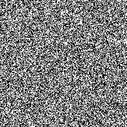
TRNG tests and analysis
For our testing we used a 12 MP Canon G9 digital camera. This camera is a high-end compact digital camera and allows taking photographs in RAW file format. Photos were taken in manual mode using the RAW file format. The photos were then loaded into Photoshop, converted as is to PNG which avoided using the camera's default lossy JPEG file format. Then tests were run by taking photographs of various places and things, processing the photos with the TRNG and running the test suite on everything. The results are presented below.
The original camera images were 4000 x 3000 pixels, then have been cropped to 1000 x 750 pixels for faster processing and to save bandwidth. The photos were processed with the Skein 512 bit hash algorithm and an estimate of 1 bit per pixel entropy input. Click on the thumbnail images below to see a bigger image.
Macro shot of sand at a beach
This is an example of the TRNG output from processing a macro shot of sand at a beach. See the full test results output here as a text file. This passes all the randomness tests and is one of the best photograph sources.
{kind=link}
{kind=link}
Macro shot of grass
This is an example of the TRNG output from processing a macro shot of grass in a field. See the full test results output here as a text file. This passes all the randomness tests and is one of the best photograph sources.
{kind=link}
{kind=link}
Photo of trees
This is an example of the TRNG output from processing a photo of trees. See the full test results output here as a text file. This is not a particularly good photograph due to it being overexposed with some of the bright cloud showing through the trees, thus the overexposed sections will be a single repeated colour. The algorithm will remove these overexposed sections and the extracted output still passes the tests, however there is less usable random data than normal.
{kind=link}
{kind=link}
Photo of water
This is an example of the TRNG output from processing a photo of water in a harbour. See the full test results output here as a text file.
{kind=link}
{kind=link}
Photo of clouds
This is an example of the TRNG output from processing a photo of clouds. See the full test results output here as a text file. Clouds are generally not a good source photograph as there are a lot of repeating colours. These do get stripped out with the algorithm, but in the end you are left with less random data. The extracted output will still pass the FIPS 140-2 tests, however it may be wiser to use another source image.
{kind=link}
{kind=link}
Summary
In summary, the best results are achieved using the macro mode on a digital camera and taking close-up shots of things like sand or grass. Shooting a variety of things like rocks, trees or water can also work. Users can experiment taking photos of various things in nature on their own. Users should take care to verify the extracted random data passes the FIPS 140-2 tests. This will give full confidence for using it as one-time pads. With this TRNG and a single 12 MP photo, it can produce enough random data for approximately 3900 messages (depending on the source photograph quality).
The safest method is to use a photo from a standalone digital camera that has been captured in the camera's raw image format, transferred to a computer by USB cable (or SD card), then losslessly converted to PNG (or BMP) file format. Avoid using a mobile phone as they generally have poor security and the contents can be secretly collected from them at any time due to the closed baseband processor. The user should erase the original photo after the one-time pads have been created from it. To be extra safe, users should run the TRNG program from a non-networked (air gapped) computer.
Custom random data loading
In the version 1.4 release onwards, the software allows users to import random data directly from their own trusted sources e.g. a hardware RNG or physical entropy source to use with the program. This will allow for creating a lot more one-time pads in a shorter period of time.
Users can change the upload type of the file from plain binary, to a plain text file containing hexadecimal symbols or Base64 characters. Once uploaded, the FIPS 140-2 tests will be run on the random data to prove that the random data is good quality. If the tests pass the user can export the random data and the program will split up the random data into separate one-time pads for use with the program.
Pad storage and exporting data
After the one-time pads have been created, they must be exported separately for each user. Part of this process automatically determines who will be sending with what one-time pads. The one-time pads are divided up equally amongst the group members and allocated to each user for sending. This prevents one user from accidentally sending with another user's allocated one-time pads, causing a two-time pad situation and allowing for cryptanalysis. All users get read access to the other group member's one-time pads, so when a message is received from another user they can decrypt it.

- This screen contains all the details that will be saved to each export file for each chat group user. The person creating the chat group should input the server address and API key here so that when other users import the file they do not need to do any additional configuration. All they need to do then is load the one-time pads into their browser and start chatting.
- A server API key can be generated from this screen. The program effectively takes 512 bits from the start of the extracted random data and uses it as the key. This 512 bits is now no longer available for use as a one-time pad. This API key is manually loaded up into the server's config file by the user. After this the user can test the connection to the server to make sure everything is set up correctly.
- The user can also define how many users will be in the chat group. They can customise the user's name or nickname next to the call sign. The custom nickname is kept locally and stored with the one-time pads. This way each chat group user has the same set of names and knows who is in the conversation. The custom nickname is not sent over the network, only the call sign (alpha, bravo etc) is sent as part of each network request so the server can send/receive messages for that user. This means only the real users know who is talking to who. If there are multiple people and chat groups around the world using the same protocol and different servers, then it makes traffic analysis even more difficult.
- There are 3 export options for using the one-time pads with the program. Export to clipboard lets you copy/paste the pads from memory into wherever you want to put them. Export to text file pops up a save dialog to save the pads to a text file on your filesystem or portable storage media. Exporting to the browser's local database is if you want to export the created pads for that user into the local storage of that device/computer browser directly and start chatting immediately.
- Saving to removable media such as a CD, DVD, MicroSD, SD card or USB drive will be convenient and portable. Hard drives and flash memory are notoriously difficult to remove data from so do not save them there unless it's inside an encrypted volume. Flash memory is at least small and compact which means you can conceal, destroy or get rid of it quickly and easily. The most secure option may be to use CDs/DVDs which can be written once, transferred to each user, then destroyed. The most convenient option is to get a USB thumbdrive, with portable versions of TrueCrypt and Firefox loaded on it. Create a small, hidden encrypted TrueCrypt volume on the device, using a cascade of all 3 block cipher algorithms available with a long password and potentially keyfiles. Then install Portable Firefox into it. Save the one-time pads in there as well. Load up Firefox and then load the one-time pads from inside it. Now the program is portable and you can take it with you on your keyring, run it from any trusted computer (e.g. home or work) and stay in contact wherever you are.
REST API using JSON
- The client browsers communicate to and from the server using JSON and the REST API on the server. The server side code is currently written in PHP 5.3+ using best security practices for protection against SQL injection and other attacks. This may be rewritten in a different language in the future.
-
The server sends CORS HTTP
headers so that the client browsers can connect and make a cross-origin request. This is needed because
the program is run locally from the
file:///location and not served by a webserver. If the JavaScript code was served from a web server it could let an attacker perform a MITM attack and alter the code, this could then make the user send unencrypted messages and they would not be any wiser. - For now the browsers use an AJAX request to send/receive data to/from the server. The reason for this is that the chat can be delayed like email (encrypted messages remain on the server until they are received), or realtime if users are connected at the same time. If a user is connected it will check for new messages from the server every 3 seconds which is fast enough to appear as realtime and does not stress the server too much.
A summary of the request/response protocols are shown below:
Send message
This is the request the client makes when sending a message.
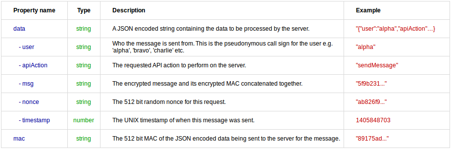
Send message server response
This is the response the server makes after it has received a request to send a message.
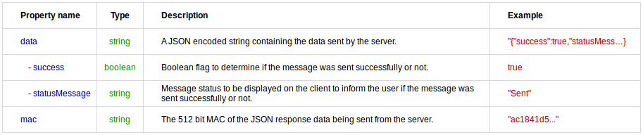
Receive messages request
This is the request each client makes every 3 seconds. This will get any new messages from the server for the user making the request.
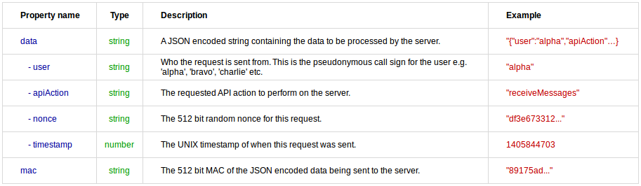
Receive messages response
This is the response the server will make after receiving a request from a client for retrieving new messages.
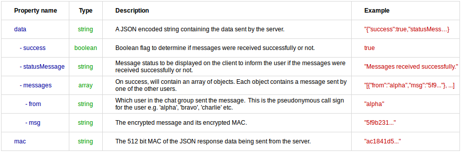
Initiate auto nuke
This is the request a client makes if they want to wipe the server database of all encrypted messages, and also wipe all the other chat group user's local one-time pad databases as well. It is fairly disruptive and designed for use only in an emergency.
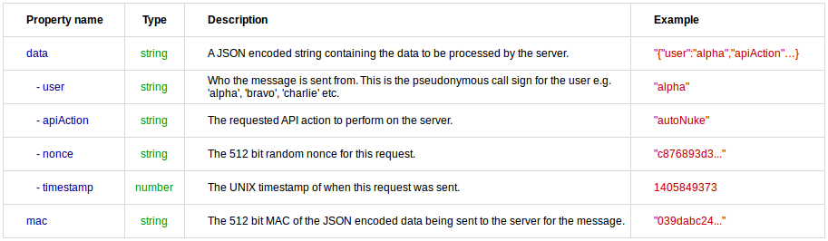
Initiate auto nuke response
This is the response the server makes after it has received an auto nuke request.
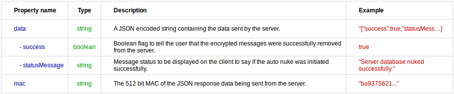
Auto nuke initiated response
This is the response other chat group users will receive while they are checking for new messages and an auto nuke has been initiated by one of the group users. Instead of receiving new messages, they will receive this notification, and the program will immediately wipe their local database of any data and clear the screen from any sent or received messages.
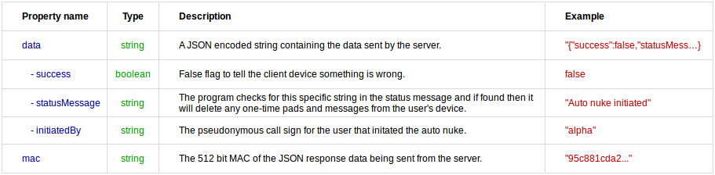
Message encoding
Each one-time pad is made up of 192 bytes which is 384 hexadecimal symbols or 1536 binary digits. See the table below for more information:
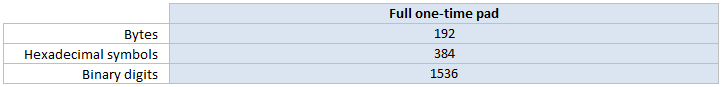
Each message is made up of three main parts, the pad identifier, the message parts and the message authentication code. The one-time pad is used to encrypt the message parts and the MAC tag.
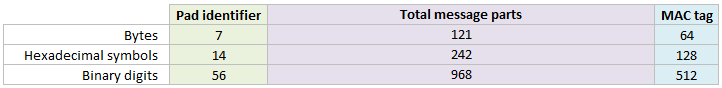
This can be further broken down to the individual message parts. See below for the length of each part:
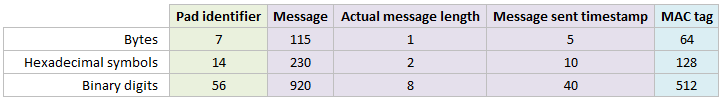
- At the moment the program only supports messages typed using the ASCII printable character set. This is roughly all the characters you can see on a standard US keyboard. In practicality this limits the languages that can be used to English and ones that use the basic Latin alphabet at the moment. This is for ease of development at the moment and the program will support other languages with UTF-8 in the future.
- All messages that are sent/received are encoded to hexadecimal format first which is just stored in a normal JavaScript string. This is to make transport using JSON easier rather than trying to send UTF-8 encoded data over the wire. A hexadecimal symbol (Nibble) is 4 bits, and two hexadecimal symbols makes 8 bits (one Octet/Byte) and can be represented as a single ASCII character.
- The Pad identifier is the first 7 bytes (56 bits) from the one-time pad. This identifies to the receiver which pad should be used to decrypt the message. This is used rather than sending the sequence number of the one-time pad to remain in sync with the other users as that could reveal to an attacker the number of messages sent so far.
-
The maximum message length has been set at 115 bytes (115 ASCII characters) for now. This is slightly
less than the size of a tweet
(140 characters) or an SMS (160 characters). This is
because generating enough random data takes a long time. Making a message length longer than that,
where the one-time pad may or may not be fully used is wasteful. If users need more than 115
characters they can simply send a second message. In future a new feature will be added to allow
a message to be spread over multiple one-time pads.
If a message is less than 115 bytes in length it is padded to the right (up to the maximum 115 bytes) with random bits generated from the Web Crypto API. This hides the actual length of the message to frustrate any cryptanalysis. For example if no padding was added and the message was simply "hi" then the ciphertext would be the same length which could aid the attacker. Of course there are a few other words with only two letters which allows for some uncertainty. However if the message is padded up to the full 115 bytes each time, then an attacker knows nothing about the true length of the message, only that it is somewhere between 1 and 115 bytes long.
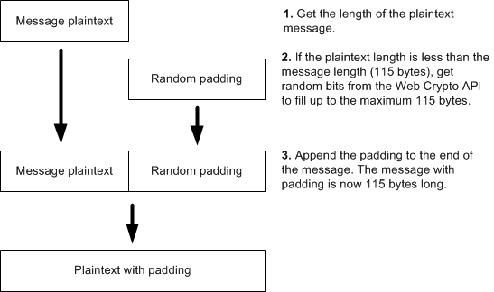 - The Actual message length is the true message length without any padding. It is an aid in the decryption process so it can remove the correct number of padding bytes from the end of the message and reveal the original plaintext automatically. This field is always 1 byte in length which is enough to represent the message length. For example, if the message was 70 bytes long, then the number 70 is converted to binary and left padded (if necessary) to be 8 bits long. 8 bits can have 28 (256) possible values which represents the numbers from 0 to 255. One byte of information can store the actual message length of 1 to 115 bytes easily. The actual message length is also encrypted with one byte from the one-time pad so it is impossible for an attacker to know the actual message length without the one-time pad. An attacker only knows that the length of a message is between 1 and 115 bytes. When decrypting the message, the message length value is checked to make sure it is in the correct range. This helps avoid denial of service and/or buffer overflow attacks.
- A UNIX timestamp is sent along with the message in the Message sent timestamp field to signify when the message was sent from the sender's computer. This is converted to binary and sent with the message packet. 5 bytes are reserved for this. It could easily be 4 bytes (32 bits), but an extra byte was added to avoid the year 2038 problem. This timestamp is also encrypted with 5 bytes of the one-time pad. This prevents an attacker from interfering with the date or time of the message which could be critical in some circumstances. It is also used for correctly reordering messages on the client side when retrieving multiple messages from the server. This prevents an attacker reordering messages from them gaining access to the server or by delaying server responses.
- The final part of the encoding is the MAC tag. This MAC tag is sent along with each message for authentication and integrity to ensure that the message has not been tampered with. The MAC tag is also encrypted with part of the one-time pad so it is also information-theoretically secure. The process is explained in depth here.
Encryption process
- The program first receives the plaintext message from the user from the text box when they click the Send message button.
- Then it does a lookup on the user's local database of one-time pads and selects the first available one-time pad allocated to that user for sending messages. The one-time pads for sending/encrypting messages are evenly pre-allocated and grouped under each user in the chat group e.g. alpha, bravo, charlie etc. This prevents one user from encrypting a messsage using the same one-time pad as another user.
- Once a one-time pad has been selected, it removes it from the local database and splits it into the pad identifier, the message parts and the MAC parts. The encryption process is as follows:
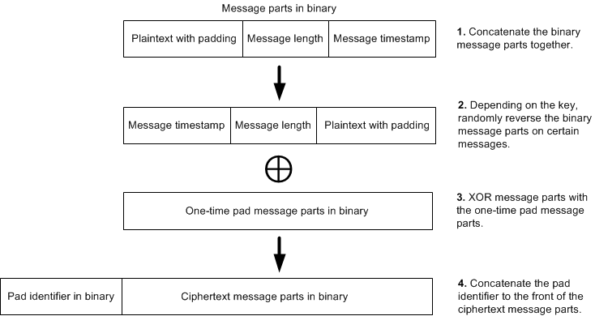
- In step one, the plaintext with padding, the message length and the timestamp are converted to binary and concatenated together.
-
In step two, because some of the bits of the 40 bit UNIX timestamp can be predictable, this could leave
a crib for an attacker and they
could recover those few bits of the key. This would not compromise the remainder of the plaintext but
would be an academic attack none the less. For example, if the timestamp was 1406440512 for
2014-07-27 at 5:55am in UTC then that would convert to binary as
00000000 01010011 11010100 10010100 01000000. If we compare another time in the future, 1503040500 for 2017-08-18 at 7:15am in UTC then that would convert to binary as00000000 01011001 10010110 10010011 11110100. The first 12 bits are the same in both timestamps even though the dates are years apart. This is because the timestamp field is larger than currently required in order to future proof the protocol. If it was the usual 32 bits then eventually there would be incorrect dates and times shown in the program after 19 Jan 2038.
To remove this as a possiblity for being a crib, the program randomly reverses the binary message parts (including the plaintext with padding, the message length and the timestamp) depending on the second last byte in the one-time pad. It does this by converting this byte to an integer value (0 - 255), then uses that number modulo 2. This will return a random integer of 0 or 1. A one will mean the message parts get reversed while a zero will mean they stay the same. This means that every message, an attacker does not know for certain whether the timestamp is at the front or end of the message parts. They also do not know whether the true plaintext begins at the start of the message or the end. Because all users have the same one-time pad, they can reverse this transformation to get the message parts back in proper order after decryption. This transformation has a similar purpose to Russian copulation. - In the third step, the Exclusive OR (XOR) operation is what does the encryption. Each bit of the plaintext is encrypted with one bit of the one-time pad. With a truly random one-time pad the encryption is unbreakable even in theory.
- The final step concatenates the pad identifier to the ciphertext message parts. The pad identifier helps the other users determine which one-time pad was used to encrypt the message.
- Once the message has been encrypted, the MAC is created using a random MAC algorithm that was selected and then encrypted with part of the one-time pad. This process is explained further on. The MAC is concatenated to the end of the ciphertext and sent with the message to the server. The server holds the message until all the other users have retrieved it.
Decryption process
The user first checks for encrypted messages on the server that are not sent by them and have not been read already by them. This will retrieve all other messages sent by users in the same chat group. Once the encrypted messages have been retrieved by the user, the messages are marked as read on the server by them. Once all users have read the message, they are deleted from the server in a cleanup process which runs every 30 seconds. The process for decryption is generally the same as encryption but in reverse order. For each encrypted message that is received:
- The program selects the sender of the message e.g. alpha, bravo, charlie etc and does a lookup on the local database of one-time pads for that user. The program selects the pad identifier (first 7 bytes) from the ciphertext which will match the first 7 bytes from one of the one-time pads in the database. The pad identifier for each one-time pad is stored in a separate field which makes searching faster. It then retrieves the one-time pad for the message and takes off the pad identifier.
- The MAC is then decrypted with the last 64 bytes of the one-time pad. Using the ciphertext message parts, the one-time pad and the random algorithm for the MAC, the MAC is calculated. If this matches the MAC sent, then the message is valid and has not been tampered with. Decryption of the message will follow. If the message matches the MAC sent with the message then an 'Authentic' status is displayed to the user. If the message is not valid, the user is warned that tampering has occurred and the decryption process will not be attempted.
- The one-time pad message parts is then XORed with the ciphertext message parts (including the plaintext with padding, message length and timestamp). This returns the decrypted text with padding, the actual message length and the time the message was actually sent.
- Depending on the second last byte of the key, the decrypted message parts are returned to their original order (unreversed) if that transformation was made in the encryption process.
- The message length part is read and this gets the length of the actual message in bytes. Reading from the start of the plaintext message up to the message length will retrieve the actual plaintext without padding.
- The one-time pads for any messages received and verified authentic are then deleted from the user's local database.
Message authentication code (MAC)
The one-time pad is vulnerable to a bit-flipping attack if not authenticated with a MAC. Therefore the program calculates and sends a one-time information-theoretically secure MAC with each message. Both users have a shared secret, which is the one-time pad for each message so the MAC can be calculated and verified by either person. The construction of this is as follows:
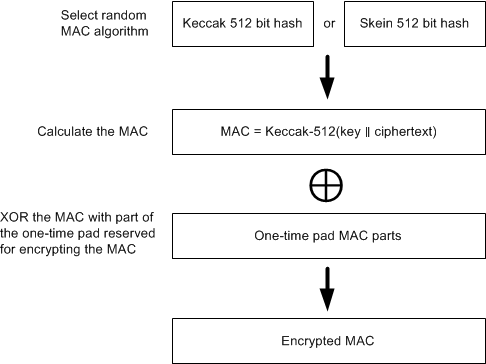
-
For each message sent, a random MAC algorithm from a pool of algorithms is chosen to authenticate the
message. This provides some protection in the case that a fundamental flaw is discovered in one of the
hash algorithms in the future. It also makes message forgery considerably more difficult as an attacker
needs to guess the correct hash algorithm as well. Currently there are only 2 hash algorithms that
are used with the program due to the lack of JavaScript library support. More may be
added in future. Potentially some of the
NIST hash function competition finalists.
Currently the hash functions used are the 512 bit versions of
Keccak and
Skein. These 512 bit hashes will provide
2256 collision resistance and 2512 pre-image resistance against regular computers.
They will provide
2170
collision resistance and 2256 pre-image resistance against quantum computers.
The program first gets a random index number from an array of available algorithms, then it uses this algorithm to create the MAC. It selects the random array index by using the last byte of the one-time pad. It converts this byte to an integer value (0 - 255), then uses that number modulo the number of MAC algorithms available. Because there are only two MAC algorithms at the moment, that will return an integer of 0 or 1 which references the index of the algorithm in an array. When a few more MAC algorithms are added in the future, this method will continue to work without adjustment. - The process is to perform the encryption on the message parts first, then calculate the MAC from the ciphertext and use the one-time pad as the key. This provides integrity of the ciphertext and integrity of the plaintext. Also it does not provide any information on the plaintext since no structure from the plaintext has been carried into the MAC. Skein and Keccak are newer, more secure hash algorithms and do not need complicated constructions like HMAC to prevent length extension attacks unlike the NSA designed SHA1 and SHA2. The MAC can be created simply by prepending the message with the key and hashing it, i.e. H(K || m).
- Finally the MAC tag is encrypted with the last 64 bytes (512 bits) of the one-time pad. This retains the information-theoretically secure properties for the MAC tag as well as the message. No attacker can know if they have successfully deciphered the encryption by brute forcing combinations of the key to create a valid MAC tag. Nor can an attacker know if they have created a successful forgery when they do not know the correct key.
Auto nuke process
The protocol normally erases the one-time pad as soon as a message is sent. The one-time pad is also removed from a receiver's database after they have sucessfully received and authenticated a message. This is a more secure form "off the record" chat similar to the OTR messaging protocol. OTR has good principles but lacks the perfect secrecy and plausible deniability of the one-time pad.
One of the key features of the program is being able to instantly and automatically wipe the local database of one-time pads, the server database of encrypted messages, the other user's database of one-time pads and clear any messages remaining on screen.
This should be initiated in an emergency situation only. Potentially if a chat group user believes their database of one-time pads may be compromised soon, or 3 letter agencies are inbound on a helicopter assault then they should initiate the auto nuke. This means the users are no longer in possession of the decryption keys so it means you cannot be compelled to produce them under duress or in a court of law. No encryption keys means no way to decrypt past messages. Without the real encryption keys, a user under duress can easily think of any plausible plaintext message for any encrypted message and an aggressor will not know the difference. A simple way to calculate this for a one-time pad, given any ciphertext is to simply create a fake message, convert the ciphertext and fake message to binary, then XOR them together which will produce a plausible key to give to an attacker.